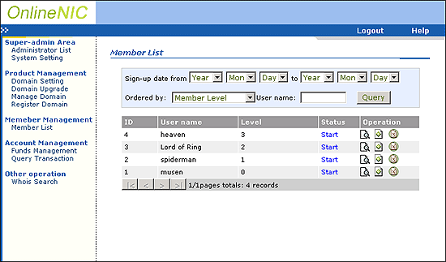

|
OnlineNIC
Reseller's Template 4.0 System
Super-Administrator Manual
The
users of Template 4.0 include Super-Administrator, Administrators,
Members.
As
the unique master of Template, Super-Administrator has access to
add or delete Administrators, set the access limitation for each
Administrator and manage all members and domains.
What's
the relationship between Super-Administrator and Administrators?
Super-Administrator
is the highest master of Template, with access to implement all
the operations in template. In order to reduce Super-Administrator's
burden in managing a great deal of members and domains, Template
4.0 enables Super-Administrator to create some administrators between
Members and himself to share his work. For example, Super-Administrator
may create finance Administrator, who is exclusively in charge of
member's funds management, and also create pricing Administrator,
who is responsible for making domain prices, etc. The establishment
of administrators will help Super-Administrator better manage the
whole system.
The
fixed login ID of Super-administrator is 100.
How
does Super-Administrator manage template system?
1. Login Page(Login ID: 100)
2.
Manage Administrator
3.
System Setting
- Website
Skin: set the language showed in the template panel
- Website
Language: set the language for the instruction messages.
- Title:
the name of your brand
- System
Status: start or stop running template system
- Copyright:
Input name of organization or individual who possess the copyright.
- Pagesize:
input the maximum volume of record lines showed in each page.
Generally, the volume is between 1-50
-
Reseller ID: input your reseller ID in OnlineNIC
- Reseller
Password: input your reseller password in OnlineNIC
- Server
Host: www.onlinenic.com
Note: If you want to run template in test environment,
please input "218.5.81.149" as Server Host and enter
135610 as reseller ID, which is exclusively for test use. The
password of test account is 654123. If you want to run template
in real-time environment, please input "www.onlinenic.com"
as server host.
- Server
Port: 20001
4.
Domain Setting
- Click
DNS to set defaul
DNS
- Click
Price to make price
(There are no more than 5 diffenet member-levels allowed to
be set in Template 4.0)
- Click
Stop or Start
to stop or start this type of domain business.
5.
Domain Upgrade
Once
OnlineNIC develops the domain with new suffix, through this panel
you may add this new domain business to your template system.
6.Manage Domain
You may list all domains or the domains matching
with the certain situation. For instance, you may input user name
to display all the domains of that member, or input time & domain
type to find the domains.
Through this panel, you are able to modify nameserver & whois
information of domains, renew and delete the domains.
7.
Register Domain
Considering that sometimes has to manually register the domain for
your customers, OnlineNIC add the function of domain registration
for you in Template 4.0. In the course of domain registration, you
have to enter the domain and user name which you want to register
it for. Once the domain is registered successfully, the Registration
fee will be deducted from the account of that user name and the
domain will be remained in that account.
8. Member List (List all of your customers)

- Click
to view member
information
-
Click to
modify member information
-
Click
to delete
member
9.
Funds Management
10.
Query Transaction
|